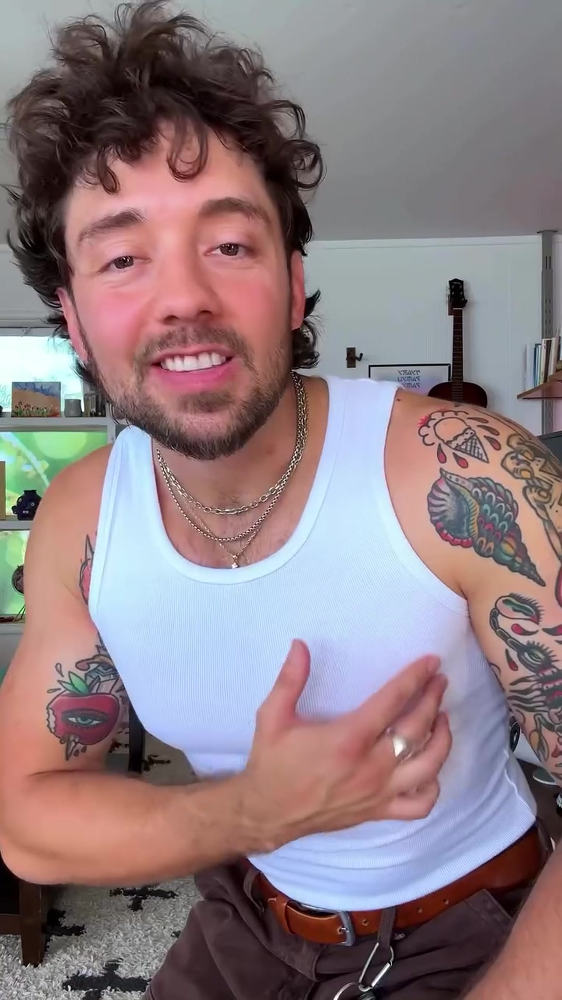
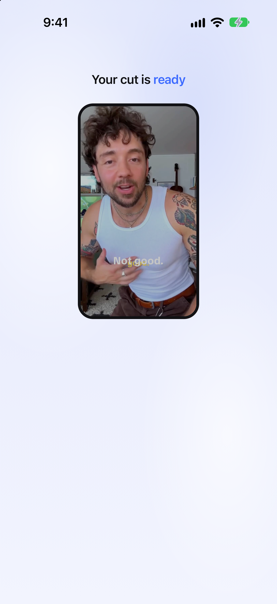
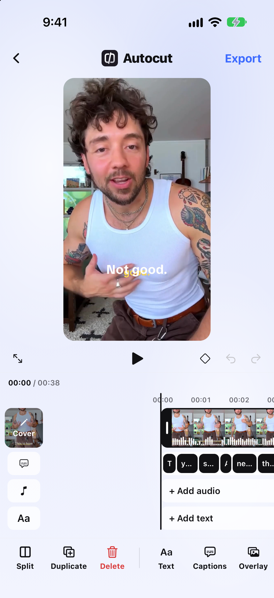
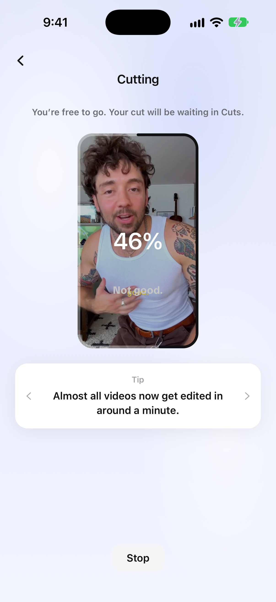
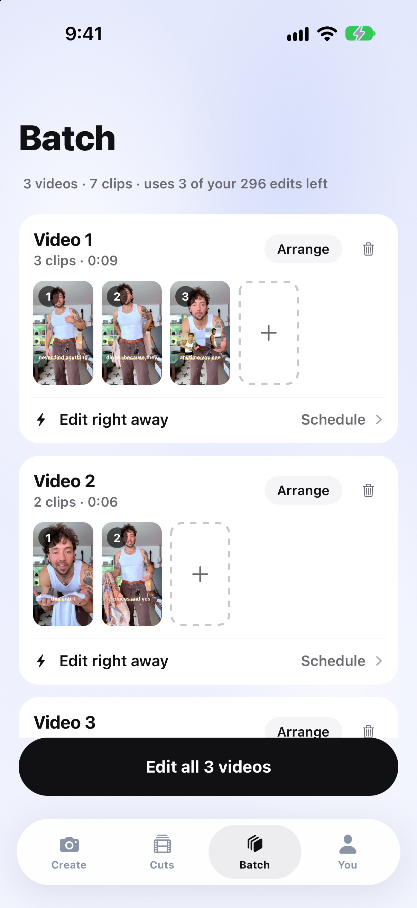
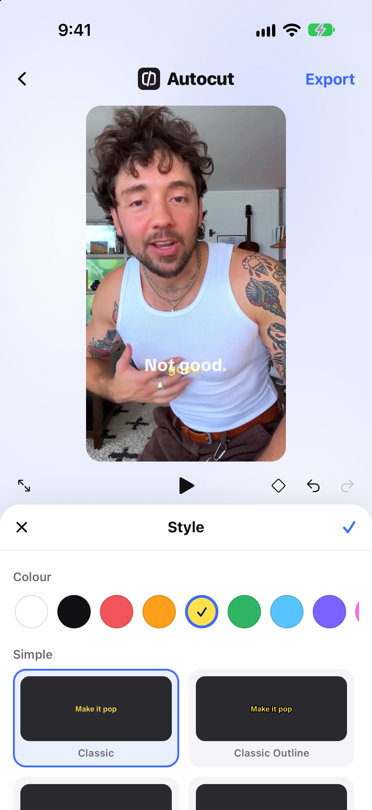
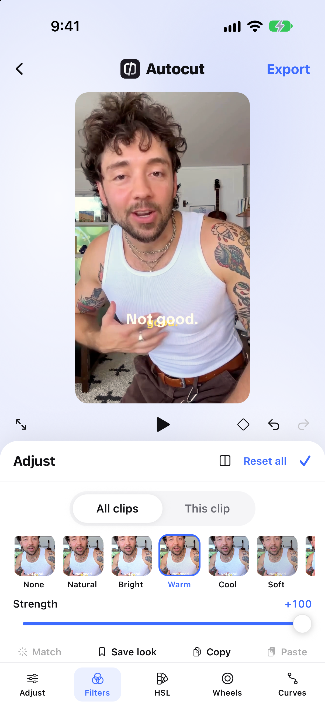
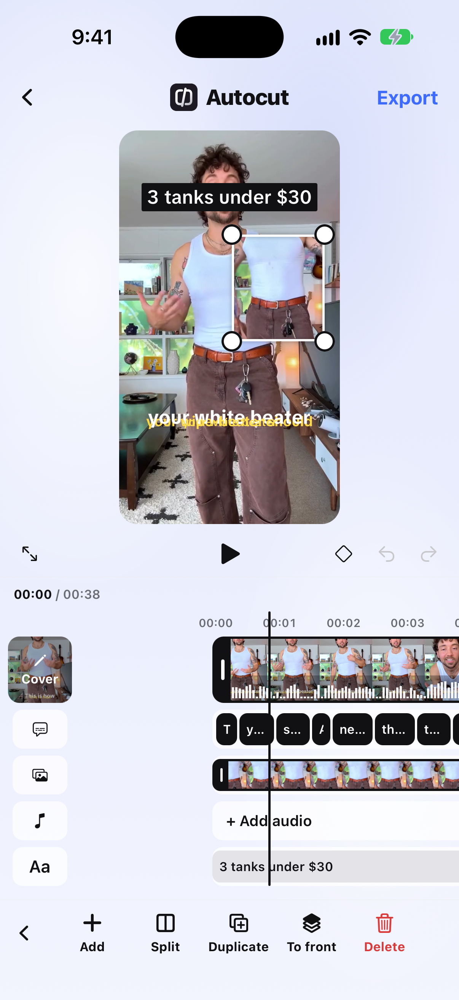
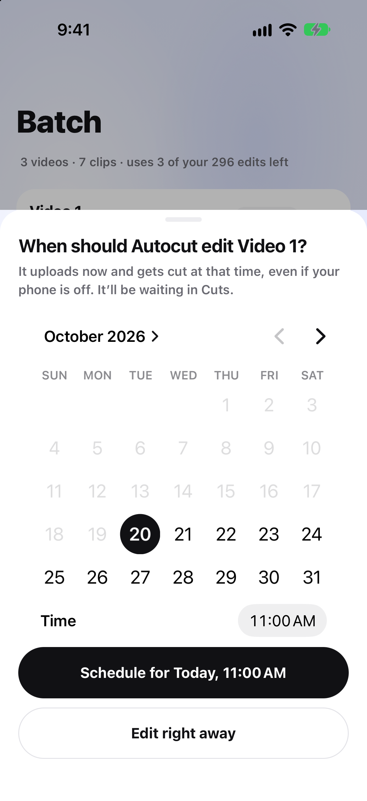
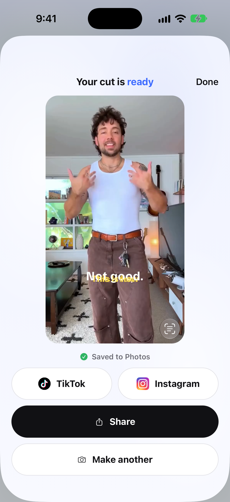

<!doctype html>
<html lang="en"><head><meta charset="utf-8">
<title>Autocut App Store slide</title>
<style>
:root { --ink: #111114; --muted: #6B6B73; --soft: #A1A1A8; --page: #EBEEFD; --blue: #3D6BFF; }
* { box-sizing: border-box; margin: 0; }
html, body { width: 1320px; height: 2868px; overflow: hidden; background: var(--page); }
body { font-family: "SF Pro Text", -apple-system, system-ui, sans-serif; color: var(--ink); position: relative;
  /* The app's blue wash: soft white glows and a touch of lavender over a pale blue. */
  background:
    radial-gradient(55% 45% at 18% 28%, rgba(255,255,255,.75), rgba(255,255,255,0) 70%),
    radial-gradient(45% 40% at 82% 72%, rgba(255,255,255,.6), rgba(255,255,255,0) 70%),
    radial-gradient(40% 35% at 70% 18%, rgba(205,214,250,.55), rgba(205,214,250,0) 70%),
    linear-gradient(#E3E8FC, #EBEEFD 55%, #F2F4FE); }
.head { position: absolute; top: 210px; left: 0; right: 0; text-align: center; padding: 0 70px; }
h1 { font-family: "SF Pro Display", -apple-system, system-ui, sans-serif; font-weight: 800; font-size: 140px; line-height: 0.98; letter-spacing: -0.035em; }
h1 em { font-style: normal; color: var(--blue); }
h1 .two { color: var(--ink); display: block; }
.sub { margin-top: 44px; font-size: 52px; line-height: 1.3; color: var(--ink); font-weight: 500; letter-spacing: -0.01em; }

.phone { position: absolute; left: 50%; top: 860px; width: 880px; transform: translateX(-50%);
  background: #0B0B0D; border-radius: 136px; padding: 18px;
  box-shadow: 0 80px 160px rgba(17,17,20,.18), 0 0 0 4px #2A2A2E inset; }
.screen { position: relative; border-radius: 120px; overflow: hidden; aspect-ratio: 1206 / 2622; background: #000; }
.screen > img, .screen > canvas { position: absolute; inset: 0; width: 100%; height: 100%; object-fit: cover; display: block; }
.island { position: absolute; top: 30px; left: 50%; width: 250px; height: 74px; transform: translateX(-50%); background: #000; border-radius: 40px; z-index: 3; }
.status { position: absolute; top: 0; left: 0; width: 100%; height: auto; z-index: 2; }

.chip { position: absolute; z-index: 5; display: flex; align-items: center; gap: 22px; background: #fff; border-radius: 999px;
  padding: 26px 44px 26px 26px; font-size: 46px; font-weight: 700; letter-spacing: -0.02em;
  box-shadow: 0 24px 60px rgba(17,17,20,.16), 0 2px 6px rgba(17,17,20,.06); white-space: nowrap; }
.chip i { width: 60px; height: 60px; border-radius: 50%; background: var(--blue); display: grid; place-items: center; }

.card { position: absolute; left: 80px; right: 80px; background: #fff; border-radius: 72px; padding: 70px 64px;
  box-shadow: 0 60px 140px rgba(17,17,20,.12); }
.label { display: flex; justify-content: space-between; align-items: baseline; font-size: 46px; font-weight: 700; letter-spacing: -0.02em; margin-bottom: 30px; }
.label span { color: var(--ink); font-weight: 500; font-size: 40px; }
.row { display: flex; gap: 16px; justify-content: center; }
.f { position: relative; flex: 1; aspect-ratio: 9 / 16; border-radius: 26px; overflow: hidden; background: #ddd; }
.f img { width: 100%; height: 100%; object-fit: cover; display: block; }
.f.cut::after { content: ""; position: absolute; inset: 0; background: rgba(17,17,20,.62); }
.f.cut { outline: 5px solid var(--ink); outline-offset: -5px; }
.f .x { position: absolute; z-index: 2; top: 50%; left: 50%; width: 70px; height: 70px; margin: -35px 0 0 -35px; border-radius: 50%; background: #fff; display: grid; place-items: center; }
.f .tag { position: absolute; z-index: 2; left: 10px; right: 10px; bottom: 14px; text-align: center; color: #fff; font-size: 30px; font-weight: 700; letter-spacing: -0.01em; }
.arrow { display: grid; place-items: center; height: 170px; }
.kept { width: 82%; margin: 0 auto; }
.card.compact { left: 70px; right: 70px; padding: 56px 56px; border-radius: 64px; box-shadow: 0 50px 120px rgba(17,17,20,.2); }
.card.compact .row { gap: 14px; }
.card.compact .label { margin-bottom: 24px; }
.card.compact .arrow { height: 110px; }
.card.compact .kept { width: 49.3%; }
.card.compact .f .tag { font-size: 28px; }
</style></head>
<body>
<div id="slide"></div>
<script>
const CHECK = '<svg width="32" height="32" viewBox="0 0 24 24" fill="none" stroke="#fff" stroke-width="3.4" stroke-linecap="round" stroke-linejoin="round"><path d="M5 12.5l4.5 4.5L19 7.5"/></svg>';
const X = '<svg width="30" height="30" viewBox="0 0 24 24" fill="none" stroke="#111114" stroke-width="3.6" stroke-linecap="round"><path d="M6 6l12 12M18 6L6 18"/></svg>';
const chip = (text, style) => `<div class="chip" style="${style}"><i>${CHECK}</i>${text}</div>`;
const phone = (inner, island = true) => `<div class="phone"><div class="screen">${inner}${island ? '<div class="island"></div>' : ''}</div></div>`;
// A white iOS status bar, for the camera screen (its own is dark on black).
const STATUS = `<svg class="status" viewBox="0 0 1206 150" xmlns="http://www.w3.org/2000/svg">
  <text x="196" y="112" fill="#fff" font-family="-apple-system, system-ui" font-weight="600" font-size="52" text-anchor="middle" letter-spacing="-1">9:41</text>
  <g fill="#fff" transform="translate(830 74)">
    <rect x="0" y="22" width="12" height="16" rx="3"/><rect x="18" y="14" width="12" height="24" rx="3"/><rect x="36" y="6" width="12" height="32" rx="3"/><rect x="54" y="-2" width="12" height="40" rx="3"/>
    <path d="M118 38 l10 -11 a15 15 0 0 0 -20 0 z M101 20 a26 26 0 0 1 34 0 l7 -8 a37 37 0 0 0 -48 0 z M87 5 a47 47 0 0 1 62 0 l7 -8 a58 58 0 0 0 -76 0 z"/>
    <rect x="182" y="0" width="76" height="38" rx="11" fill="none" stroke="#fff" stroke-opacity=".45" stroke-width="3.5"/>
    <rect x="188" y="6" width="64" height="26" rx="6"/><rect x="262" y="12" width="5" height="14" rx="2.5" fill-opacity=".45"/>
  </g></svg>`;

const SLIDES = {
  1: {
    h: ['Just talk.', 'We do the <em>cutting</em>.'], sub: 'Retakes, ums and dead air, cut for you.',
    body: () => phone(`<canvas id="ui"></canvas>${STATUS}`) +
      chip('Retakes cut', 'left:70px; top:1360px') + chip('Ums removed', 'right:70px; top:1720px') + chip('Dead air gone', 'left:110px; top:2090px'),
    after: keyCamera,
  },
  2: {
    h: ['Flubbed a line?', 'Just say it <em>again</em>.'], sub: 'Autocut keeps your best take and cuts the rest.',
    body: () => {
      const raw = [['f1', 'Retake'], ['f2', 'Retake'], ['f3', 'Retake'], ['f4'], ['f5'], ['f6']];
      return phone('') + `<div class="card compact" style="top:1830px">
        <div class="label">Your raw take <span>0:30</span></div>
        <div class="row">${raw.map(([f, tag]) => `<div class="f${tag ? ' cut' : ''}">${tag ? `<div class="x">${X}</div><div class="tag">${tag}</div>` : ''}</div>`).join('')}</div>
        <div class="arrow"><svg width="90" height="110" viewBox="0 0 24 30" fill="none" stroke="#111114" stroke-width="2.6" stroke-linecap="round" stroke-linejoin="round"><path d="M12 3v23M4 18l8 8 8-8"/></svg></div>
        <div class="label">Your cut <span>0:26</span></div>
        <div class="row kept">${['f4', 'f5', 'f6'].map((f) => `<div class="f"></div>`).join('')}</div>
      </div>`;
    },
  },
  3: {
    h: ['Captions on', '<em>every word</em>.'], sub: 'Drag, resize and restyle them on the video.',
    body: () => phone('') + chip('Every word, timed', 'right:60px; top:2150px'),
  },
  4: {
    h: ['Send it.', 'Keep <em>filming</em>.'], sub: 'Most videos are cut in about a minute. They wait for you in Cuts.',
    body: () => phone('') + chip('You’re free to go', 'left:60px; top:2150px'),
  },
  5: {
    h: ['Edit <em>10 videos</em>', 'at once.'], sub: 'Pick each video’s clips, then tap Edit all.',
    body: () => phone('') + chip('Batch your week', 'right:60px; top:2200px'),
  },
  6: {
    h: ['Your captions.', 'Your <em>style</em>.'], sub: 'Pick a look, a colour and capitals. Every caption changes at once.',
    body: () => phone('') + chip('Any colour', 'left:60px; top:1560px'),
  },
  7: {
    h: ['Colour like', 'a <em>pro</em>.'], sub: 'Filters, tone, HSL and curves. Match one clip to another in a tap.',
    body: () => phone('') + chip('12 filters', 'right:60px; top:2180px'),
  },
  8: {
    h: ['Drop in <em>photos</em>', 'and clips.'], sub: 'Show the product while you talk about it.',
    body: () => phone('') + chip('Show, don’t just tell', 'left:60px; top:2180px'),
  },
  9: {
    h: ['<em>Schedule</em>', 'your edits.'], sub: 'Pick a time and it gets cut then, even with your phone off. On Pro and Ultimate.',
    body: () => phone('') + chip('Phone can be off', 'right:60px; top:1140px'),
  },
  10: {
    h: ['Post straight', 'to <em>TikTok</em>.'], sub: 'Saved to Photos in full quality, then one tap to TikTok or Instagram.',
    body: () => phone('') + chip('Full quality', 'left:60px; top:1560px'),
  },
};

// The camera screen over the take: its black preview area becomes see-through.
function keyCamera() {
  const img = new Image();
  img.onload = () => {
    const c = document.getElementById('ui');
    c.width = img.width; c.height = img.height;
    const g = c.getContext('2d');
    g.drawImage(img, 0, 0);
    const d = g.getImageData(0, 0, c.width, c.height);
    for (let i = 0; i < d.data.length; i += 4) {
      const y = Math.floor(i / 4 / c.width);
      const m = Math.max(d.data[i], d.data[i + 1], d.data[i + 2]);
      if (y < 150 || m < 6) d.data[i + 3] = 0; // the preview, and the dark status bar
    }
    g.putImageData(d, 0, 0);
    document.body.dataset.ready = '1';
  };
  img.src = 'src/camera.png';
}

const n = new URLSearchParams(location.search).get('s') || '1';
const s = SLIDES[n];
document.title = `Autocut slide ${n}`;
document.getElementById('slide').innerHTML =
  `<div class="head"><h1>${s.h[0]}<span class="two">${s.h[1]}</span></h1><div class="sub">${s.sub}</div></div>` + s.body();
if (s.after) s.after(); else document.body.dataset.ready = '1';
</script>
</body></html>
